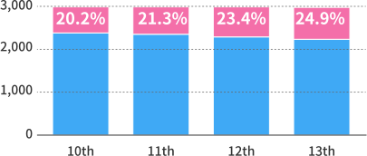

China's Two Sessions is one of the country's most important political events. Each year in March, thousands of representatives gather in Beijing to propose and announce policies that will shape the country's development.
During the event, the National People's Congress (NPC) convened its deputies representing the interests of their communities throughout the country. As China's top legislature and highest organ of state power, the NPC gathers about 3,000 deputies to discuss national affairs. But who are they? What are their educational backgrounds? What ethnic groups do they belong to?
This year, exactly 2,975 deputies attended the second session of the 13th NPC. Generally, each congress is elected for a term of five years, and a session is held each year. Each dot represents one deputy.
Proportion of female
deputies increased
Among the 2,975 deputies to the 13th NPC, there are 2,233 males
and 742 females.
We see more women are being represented. At this session, female deputies account for 24.94 percent of the total, up from
20.2 percent during the 10th NPC (2003-2008).
The female deputy's proportion since 2003

Post-60s: Backbone of NPC
Post-90s: More women than men
In terms of age, over half of the deputies were born in the 1960s, bringing the congress's average age to 53.77 years.
Among others, 1,672 deputies were born in the 1960s, taking up
over a half of
the total. They are the backbone of China's top legislature.
Meanwhile, the younger the deputies, the more balanced the gender ratio.
The most well-represented
ethnic group: Tatar
The gathering also draws deputies from all of China's 56 ethnicities. The largest group of deputies comes from the Han nationality, making up 85 percent of the attendees. This is close to the roughly 92 percent of Han Chinese in the general population. The second largest group in raw numbers comes from the Hui nationality with 62 deputies.
The ethnicities of the deputies can also be grouped based on how well represented they are compared with the general population. As such, the Tatar people are the most represented, with one deputy for every 3,600 members from the ethnic group within China. The Lahu is the least represented with one for every 500,000, and the Han comes second with one for every 480,000.
Nine in 10 deputies hold a
bachelor's degree or above
The educational backgrounds of the deputies reflect the country's standards for its government. Out of the 2,198 deputies that we have educational data for, 88.5 percent of them have a bachelor's degree or higher. Those with a master's degree made up the largest group (836), while PhDs come second (584).
For those with degrees higher than a bachelor, about 64 percent (911) were born in the 1960s.
For those born in the 1980s, only one in 10 had a master's degree or PhD.
Liberal arts grads outnumber science grads
Most popular major is management science
Liberal arts grads outnumber
science grads, most popular major
is management science
What did university grads study? When looking at the highest degrees attained for the 1,777 deputies that we have data for, about 66 percent (1,165) majored in the liberal arts, almost twice the number of science majors (612).
Specifically, one fifth of them studied management science, followed by engineering, economics, law and science.
Moreover, 122 deputies received overseas education.
Out of the total 2,975 deputies from 35 delegations, 2,172 are members of the Communist Party of China (CPC), 423 have no party affiliation, and 380 are from non-CPC parties.
Reports are often dry, but official Chinese reports can provide a glimpse into what policies and direction the country places importance on.
Premier Li Keqiang delivered the 2019 government work report to deputies at the opening of this year's NPC. We took a look at the keywords that stood out and how they fit into the country's past and future.
Since 1954, the 51 released government reports had a total of 977,643 words, with the 1955 report being the longest at 51,623.
"Development" continues to top the word count in those reports with 5,410 mentions, while "construction," "economy" and "reform" trail right behind.
Since 1954, we see that the country's priorities for development have changed.
Also, attention to the quality of economic growth has increased since 2014, with greater mentions of "development models and problems."
The word count for a report tends to spike whenever there is a change in NPC deputies or a five-year plan begins.
Since 2005, the government work report has used quantitative indicators such as GDP, CPI, urban job creation and others to highlight the country's development.
We can also look at development trends in China's legal and judicial apparatuses by analyzing work reports of the Supreme People's Court (SPC) and the Supreme People's Procuratorate (SPP). They are the country's highest court and highest prosecutorial organ, respectively.
The reports, delivered to NPC deputies during the Two Sessions, show the growing emphasis on the rule of law since they were first released in 1980.
"Rule of law" first became a key phrase in both work reports in 2001. It has remained a central focus of the reports ever since.
The latest SPC work report shows that in 2018, the country's highest court handled nearly 34,794 cases, among which 31,883 were concluded, up 22.1 percent and 23.5 percent year on year, respectively. Local courts handled 28 million cases and concluded 25.168 million cases, up by 8.8 percent and 10.6 percent from the year before, respectively.
It also notes that Chinese courts concluded 28,000 graft cases involving embezzlement, bribery and dereliction of duty last year. Among the 33,000 people involved were 18 former officials at the provincial level or above.
The 2019 SPP report states that in 2018, procuratorial organs in the country approved the arrest of 1,056,616 criminal suspects and prosecuted 1,692,846 criminal suspects, down 2.3 percent and 0.8 percent year on year, respectively.
The report notes that violations against environmental preservation, property rights, minors and martyrs protection were severely punished in 2018.
Over the past 40 years, both reports have seen an increase in terms related to civil society, and a drop in phrases like "cracking down on criminal activities."
Meanwhile, terms related to economic development, judicial justice and safeguarding people's rights and interests have appeared more often.
From this, we see that China's legal and judicial systems are becoming more preoccupied with the well-being of ordinary citizens.